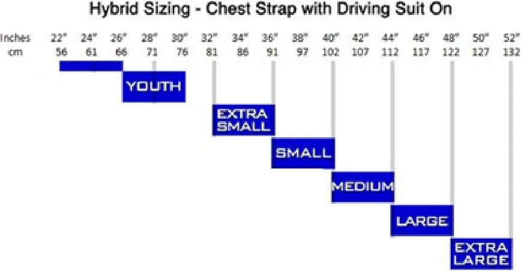
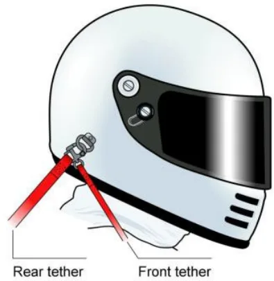
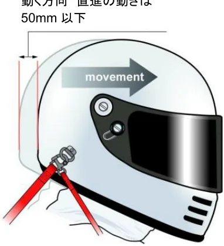
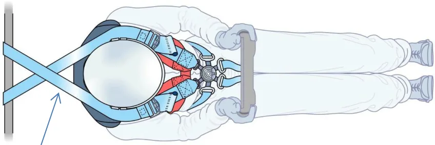
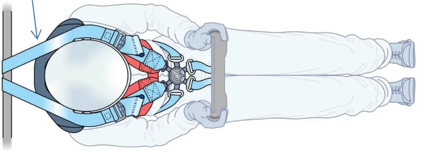
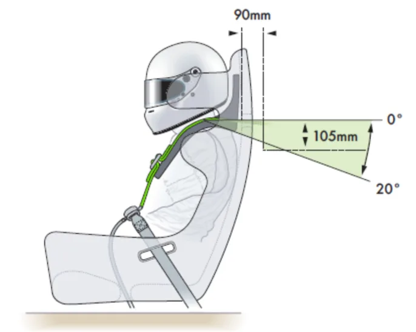
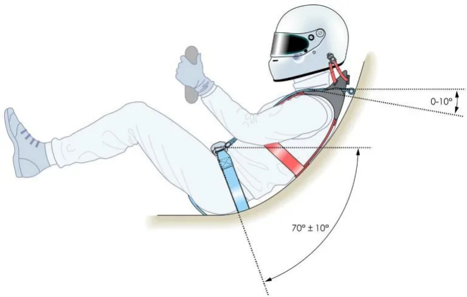

ガイドと設置仕様_Hybrid&HybridPro_日本語版
JAF の公式サイトではありません。JAF が公開する PDF を自動変換した非公式の検索用アーカイブです。記載内容は必ず JAF の原本 PDF で出典をご確認ください。 検索と AI 質問つきのビューアで開く
FEDERATION INTERNATIONALE DE L'AUTOMOBILE
Guide and installation specification for Hybrid &
Hybrid Pro devices in racing competition
レース競技におけるハイブリッド＆ハイブリッド・プロ（Hybrid＆HybridPro）
装置のガイドと設置仕様
March 2022
2022年3月
P.2目次
序文 ......................................................................................................................................... 3
1. ハイブリッドまたはハイブリッド・プロの選択 ............................................................................ 3
1.1. ハイブリッドサイズ選別 ................................................................................................... 3
1.2. ハイブリッドウィングまたはタブ ........................................................................................ 4
2. ハイブリッドの準備 ............................................................................................................... 4
2.1. 摩擦ゴム........................................................................................................................ 4
2.2. パッド付け ...................................................................................................................... 4
2.3. FHRテザーの長さ調整 ................................................................................................... 4
2.4. ハイブリッド装置のシートベルト固定システム（SAS）ストラップ ......................................... 6
3. ハイブリッドまたはハイブリッド・プロで使用するヘルメット ....................................................... 6
4. 導入 ..................................................................................................................................... 7
4.1. 座席 .............................................................................................................................. 7
4.2. ハーネス ........................................................................................................................ 7
4.2.1. ハーネスの制限 ................................................................................................... 7
4.2.2. アジャスターの位置 .............................................................................................. 7
4.2.3. 肩ベルトの角度 - 上面図..................................................................................... 7
4.2.4. ショルダーベルトの角度 - 側面図 ........................................................................ 8
4.3. ハイブリッドと、ヘッドレストおよびコックピット周囲 ............................................................ 9
4.4. ハイブリッド装備での車両からの避難 ............................................................................. 9
5. ハイブリッドの寿命 ............................................................................................................... 9
P.3序文前頭部拘束(FHR)装置は、正面衝突または角度のついた正面衝突の際に、ドライバーの頭部を胴体に対して拘束することで、頭部と頸部への負荷を軽減するものである。認可されているFHRシステムにはさまざまなタイプがあり、ハイブリッド＆ハイブリッド・プロ（HYBRIDとHYBRID PRO）はそのうちの2つである。本書は、レース競技でハイブリッドまたはハイブリッド・プロ装置を選択して使用する際に考慮すべき点に関するいくつかの基本的なガイドラインを提供することを目的としている。これらのガイドラインは、FIAウェブサイトwww.fia.comのホモロゲーションセクションにあるテクニカルリストNo.29に掲載されているFIA基準8858-2010に従って承認されたハイブリッドおよびハイブリッド・プロ装置に適用される。1.ハイブリッドまたはハイブリッド・プロの選択ハイブリッドやハイブリッド・プロ装置のモデルを選ぶ際には、タイプとサイズを考慮する必要がある。ハイブリッドは、ハイブリッド・プロよりもリアテールが長く、シートベルト固定システム（Seat Belt Anchoring System － SAS）と呼ばれるセーフティハーネスのバックルに接続する2本のストラップを装備している。ハイブリッド・プロにはSASは含まれていない。着座ポジションの角度は、ハイブリッドまたはハイブリッド・プロのタイプ選択には影響しない。特に明記されていない限り、本書でハイブリッドと記載されている場合は、ハイブリッド装置とハイブリッド・プロ装置の両方を指す。1.1 ハイブリッドサイズ選別ハイブリッド装置は、装置を着用者に取り付けるハイブリッドハーネスによってサイズが決定される。装置の剛性部分は、エクストラスモールからXXXラージのサイズで同一である。装置のハイブリッドハーネスは、図１に示すように着用者の胸囲を測定することによってサイズ設定される。ハイブリッドサイズ選別 - ドライビングスーツを着用した状態でのチェストストラップ

P.41.2ハイブリッドウィングまたはタブハイブリッド装置は、肩ベルトのベアリング面の上部に、図２に示される小さなウイングまたはタブを有している。これは、肩ベルトの横方向の動きを軽減し、装置にベルトを保持するためである。
![図2 ウイングを付けたハイブリッド・プロ装置の例2.ハイブリッドの準備ハイブリッド装置の本体は絶対に改造してはならないが、ハイブリッドやハイブリッド・プロを準備するにあたって、いくつかの点を考慮することができる。2.1摩擦ゴムハイブリッド装置の中には、ショルダーストラップの下面をグリップするために、上面を高摩擦ゴムで覆っている。これらの装置では、ドライバーはこの摩擦材を取り除いてはならない。ゴム表面の状態を監視されなければならない - 破損、裂け、破れ、またはその他の損傷は認められない。修理を行う場合は、製造元の指示に厳密に従うこと。FIAは、この作業を装置の製造者が行うことを強く推奨する。ハイブリッドが塗装されている場合（メーカーの指示に従った場合のみ）、ショルダーベルトとの摩擦を損なわないように、ゴムは完全に覆われてはならない。ハイブリッドに塗装を施した場合は、FIA基準 8858-2010の難燃性要件を遵守しなければならない。2.2パッド付けドライバーの身体に接触するハイブリッド装置の表面には、快適性を高めるためにパッドを付けることができる。ドライバーとハイブリッド装置の間に使用されるパッドの厚さは、ドライバーが運転装備を完全に整えハーネスを締めた状態で車両内に着席した場合、15mmを超えてはならない。パッド部は防炎素材で覆われていなければならず、ハイブリッドの両サイドで幅は8mmを超えてはならない。2.3 FHRテザーの長さ調整ハイブリッド用のテザーアッセンブリーは、ハーネスを締めてそのレーシングポジションに着座した状態で、個々のドライバーに合わせて調整する必要がある。ハイブリッド装置には、図3 に示すように、2 組のFHR テザーが装着される。](assets/fig-p0004-01.webp)

リアテザー フロントテザー
図3 ハイブリッド装置のテザーの識別車両内のテザーアッセンブリーの調整手順は以下の通り： 1) ハーネスを締めた状態でそのレースポジションに着座したら； - ハイブリッドの剛性部は、ドライバーの背と座席の間の肩の上に乗っていなければならずショルダーベルトは装置のベルトベアリング面になけれなならない。- FHRのテザーは、ベルトに張力をかけた後、装置が肩ベルトに対して上になるように、少し引き上げなけれなならない。2) リアテザーを先に調整しなけれなならない。- リアテザーは、テザーの調整を可能にするために、調整3バーから部分的に緩めることができる。- その後、テザーをヘルメットの両側に取り付けなけれなならない。- テザーを装着する際には、図4に記載されているように、装着者の車両内での静止ポジションまたは開始ポジションから25mm～50mmの範囲で、装着者の頭部が前方に移動できるように装着することが推奨される。静止ポジションとは、レース車両を運転している間、着用者がいるポジションのことである。ヘルメットはリアヘッドレストに対して上がらず、通常の運転ポジションであること。(この操作をするときは、あごを上げること。これは直進の動作である。)

P.63) 次にフロントテザーの調整を行わなければならない。- ヘルメットアンカーをヘルメットに取り付けた状態で、フロントテザーの長さを、頭部を左右に回転させることができる適切な長さに調整しなければならない。装着者は、少なくとも最初の12mmから25mmの間は自由に動くことができなければならない。両側の動きは90°以下に制限されていなければならない。テザーやクランプブラケット、およびそれらをハイブリッドシリーズの背面に固定しているネジの状態を注意深く観察しなければならず、摩耗が見られた場合は交換しなければならない。2.4 ハイブリッド装置のシートベルト固定システム（SAS）ストラップハイブリッド装置には、デバイスの剛性部分の下部から、着用者の周りから着用者の正面まで伸び、シートベルトのバックルに取り付けられる2つの斜行ストラップが付いている。これらのストラップはシートベルト固定システム（SAS）と呼ばれ、ハイブリッド・プロ装置にはないものである。SASの端部取付け部は、ショルダーストラップの先端部、ラップストラップの先端部、またはクロッチストラップの先端部のいずれかに引っ掛けること。図5に、可能な組み合わせの例をいくつか示す。
![図5 シートハーネスバックルへのSASアセンブリの例シートベルト・ハーネスと残りのハイブリッド・ストラップをバックルで締めてから、SASストラップの長さを調整しなければならない。3.ハイブリッドまたはハイブリッド・プロで使用するヘルメットFIA基準8858-2002、8858-2010、8860-2010、8860-2018または8859-2015に準拠したFIA認証ヘルメットが必要とされる。FHR用に認可されたヘルメットの全リストはFIAテクニカルリストNo.33、41、49および69を参照のこと（ハイブリッドとハイブリッド・プロ用を含む）。FIAラベル8858-2002または8858-2010のヘルメットは、スネル（Snell）のステッカーが貼られている場合にのみ有効である。従って、有効なスネルの認定を受けたヘルメットのみが認められる。以下の日付を考慮することが重要である。 FIA基準8858-2002または8858-2010で承認されたヘルメットは、スネル認証に関わらず、2023年12月31日以降は無効となる。ハイブリッド装置は常にヘルメットと一緒に使用され、適切に装着されていること（FHR のテザー端部取付け部はヘルメットにクリップで留められ、すべてのデバイス・ストラップはバックル留めされ締められている）。従って、例えばラリーのリエゾン・セクションなど、ヘルメットを着用していない場合はいつでも、ハイブリッドもまた取り外されること。](assets/fig-p0006-01.webp)
P.74.導入4.1座席ハイブリッドをサルーンカーで使用する場合は、FIA基準8855-1999、8855-2021または8862- 2009に準拠して公認された安全シートを使用しなければならない。このような場合、ショルダーストラップが座席のショルダースロットの間で自由に動くようにすることが重要である。そのため、ベルトストラップをスロット内で中央に配置し、スロットの端に触れないようにすることが推奨される。4.2ハーネス使用する安全ベルトは、FIA基準8853/98 または 8853-2016 で公認された最低5点式のハーネスでなければならない。ドライバーは、適切に締め付けられていることを常に確認しなければならない。チームは、ショルダーストラップの取り付けとバックルの位置に特に注意を払わなければならない。バックルの位置は2022年FIA国際モータースポーツ競技規則付則J項第253条6項2で規定されている。以下、関連規定の抜粋を参照のこと。「第253条6項 安全ベルト・・・腰部ストラップは骨盤の隆起部と上部の腿の間の屈曲部にしっかりと密着していなければならない。いかなる場合でも、それらは腹部に着用されるものであってはならない。」チームによっては、ショルダーベルトをシートの横に移動させるために、ゴム紐をショルダーベルトに装着する傾向がある。しかし、これはショルダーベルトを横に移動させてしまうため、ベルトの接触面積が減り、ハイブリッド・プロシリーズに悪影響を及ぼすことになる。競技者は、ゴム紐をショルダーベルトに決して装着してはならない。4.2.1. ハーネスの制限ハイブリッド装置は、幅が最低70mmの標準的なショルダーストラップと共に公認されたハーネスモデル、さらに幅が最低44mmの特定のショルダーストラップと共に公認されたモデルで、「FHR専用」または「HANS®専用」と表示されているモデルで使用することができる。FIA 公認のダブルショルダーベルトシステムは、ハイブリッドまたはハイブリッド・プロの装置への使用には必要ではなく、有用ではない。4.2.2. アジャスターの位置ショルダーベルトの長さ調節装置は、胸部の低い位置に配置すること。4.2.3. 肩ベルトの角度 - 上面図車両のショルダーベルトの固定位置は、運転席の中心線に対し左右対称とする。上から見た場合、ベルト間の角度は、約20°～25°の範囲内とすることが推奨され、決して10°～25°の範囲外となしないこと。図6に示すように、必要に応じてベルトが接触したり、ベルト同士が交差したりすることは構わない。

ショルダーベルト間の角度は、約20°～25°の範囲


